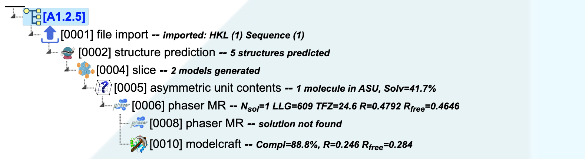

3.4. CCP4 Cloud Atlas¶
This atlas presents different ways of solving structures in CCP4 Cloud depending on available data. Only schematic structure solution projects are shown, which only demonstrate general scenarios.
For solving a structure, you need at least experimental observations (reflections) either merged or unmerged. Unmerged reflections must be scaled and merged with Aimless task before use in other programs.
Note
Further actions will vary
Note
Atlas projects are available from the Tutorials directory
3.4.1. Molecular Replacement with known sequence and structural homolog(s)¶
A1.1.1 Single-chain model, solution with Phaser
Starts from importing unmerged MTZ, sequence and PDB files, finishes with phased and rebuilt model.

A1.1.2 Single-chain model, solution with Molrep
Starts from importing merged MTZ, sequence and PDB files, finishes with phased and rebuilt model.
{kind=link}
A1.1.3 Multiple models, solution with Phaser
Starts from importing merged MTZ, sequence and PDB files, finishes with phased and rebuilt model.
{kind=link}
A1.1.4 Multiple models, solution with Molrep
Starts from importing merged MTZ, sequence and PDB files, finishes with phased and rebuilt model.
{kind=link}
Note
difference from A.1.3 by using “Refmac” between fitting domains.
3.4.2. Molecular Replacement with known sequence and unknown structural homolog(s)¶
Starts from importing merged MTZ and sequence file, finishes with phased and rebuilt model.
{kind=link}
Starts from importing merged MTZ and sequence file, finishes with phased and rebuilt model.
{kind=link}
Starts from importing merged MTZ and sequence file, finishes with phased and rebuilt model.
{kind=link}
A1.2.4 MR with model found by sequence search
Starts from importing merged MTZ and sequence files, finishes with phased and rebuilt model.
{kind=link}
Note
“Slice” is used to cope with unsuitable configurational variations in found model, and two domains are fit sequentially.
A1.2.5 MR using structure prediction
Starts from importing merged MTZ and sequence files, finishes with phased and rebuilt model.
{kind=link}
Note
“Slice” is used to cope with unsuitable configurational variations in predicted model, and that second domain could not be fit. Nevertheless, “Modelcraft” was able to built structure using phases from fitting only one domain.
3.4.3. Molecular Replacement with unknown sequence¶
A1.3.1 MR with unknown sequence using Simbad
Starts from importing merged MTZ, finishes with suggested sequence, phased and rebuilt model.
{kind=link}
Note
job 0006 was formed with multiple-selecting jobs 0001 and 0004, and job 0007 – with multiple-selecting jobs 0006 and 0005.
A1.3.2 MR with unknown sequence using Arcimboldo
Starts from importing merged MTZ, finishes with suggested sequence, phased and rebuilt model.
{kind=link}
Note
job 0006 was formed with multiple-selecting jobs 0001 and 0004, and job 0007 – with multiple-selecting jobs 0006 and 0005.
3.4.4. Experimental Phasing with known sequence¶
A2.1.1 EP with known sequence using Shelx-C/D and Phaser
Starts from importing merged MTZ and sequence files, finishes with phased and built model. The final result is given in job 0009 (reverse hand), model building in job 0010 (original hand) was done only for verification.
{kind=link}
A2.1.2 EP with known sequence using Crank-2 and Phaser
Starts from importing merged MTZ and sequence files, finishes with phased and built model. Crank-2 is used only for calculating the heavy-atom substructure (which is a task separate from the “full” Crank-2). The final result is given in job 0010 (original hand), model building in job 0011 (reverse hand) was done only for verification.
{kind=link}
3.4.5. Automatic Experimental Phasing with known sequence¶
A2.2.1 Auto-EP with known sequence using Crank-2
Starts from importing merged MTZ and sequence files, finishes with phased and built model.
{kind=link}
A2.2.2 Auto-EP with known sequence using Shelx-C/D/E
Starts from importing merged MTZ and sequence files, finishes with phased and built model. Model building was repeated with Modelcraft for achieving higher completeness.
{kind=link}
3.4.6. Experimental Phasing with unknown sequence¶
A2.3.1 EP with unknown sequence using Crank-2
Starts from importing merged MTZ and sequence files, finishes with phased and built model. In job 0006, found sequence is substituted in structure revision.
{kind=link}
3.4.7. Molecular Replacement in electron density and hybrid approaches¶
A3.1.1 MR fitting 2nd domain in electron density
Starts from importing merged MTZ, single-chain molecular model and sequence files, finishes with phased and built 2-chain model. Second domain is fit in electron density obtained from fitting first domain in reflection data.
{kind=link}
A3.1.2 MR in experimental density
Starts from importing merged MTZ, single-chain molecular model and sequence files, finishes with phased and built model. Experimemtal phases are obtained as in A2.1.1 and model is fit in phases corresponding to the original hand.
{kind=link}
3.4.8. Various structure solution techniques¶
A4.1.1 Solving protein-nucleotide complex with Phaser and Arp/wArp (NUCE)
Starts from importing merged MTZ, single-chain molecular model and sequence files, finishes with phased and built protein-nucleotide complex.
{kind=link}
Note
The iterative approach to building nucleotide chains by using triads of Density Modification, Model Building and Refinement.